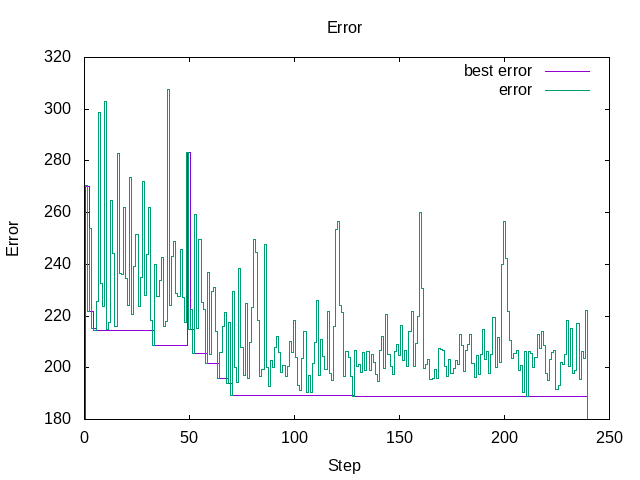
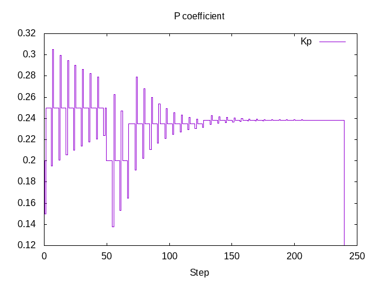
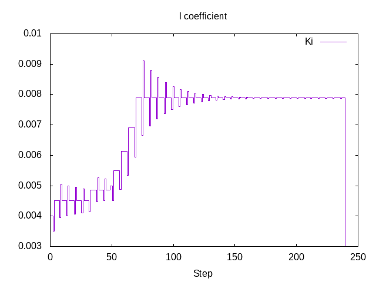
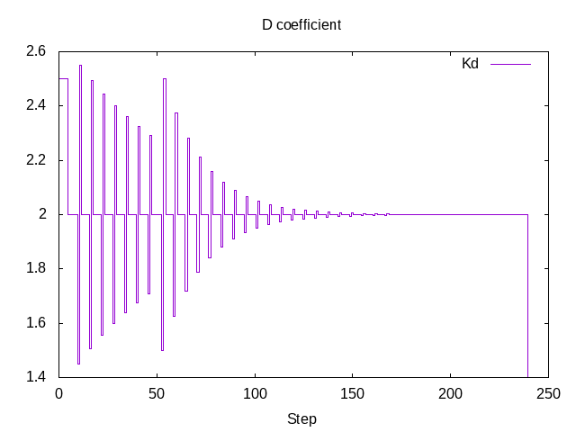
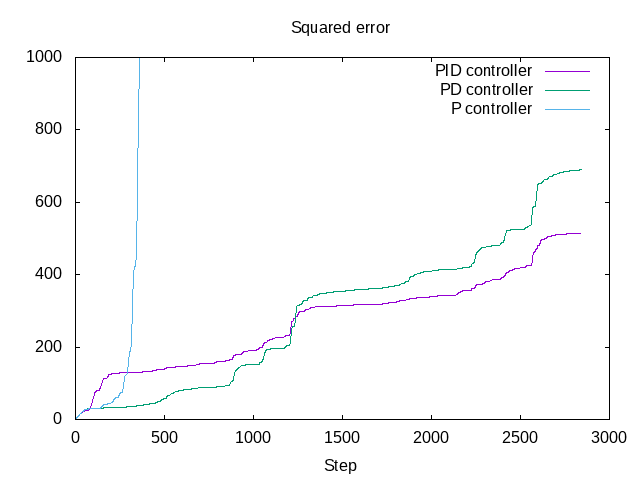
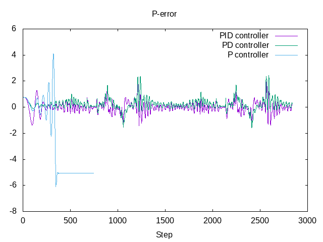
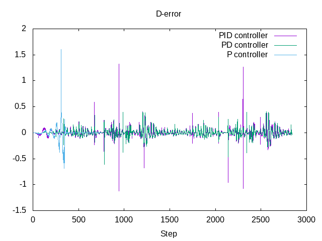
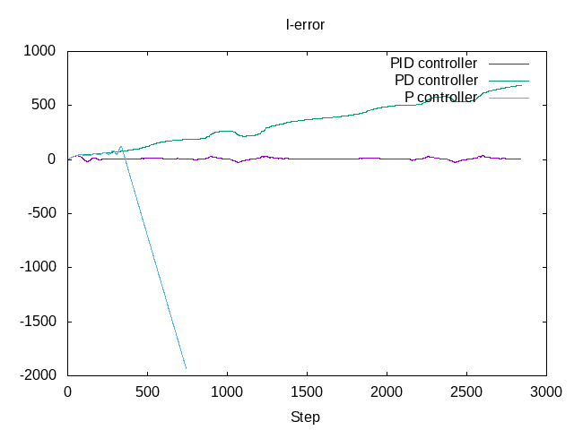

CarND-Controls-PID project
Table of Contents
1 PID controller
PID controller computes the control value \(u(t)\) as a weighted sum of proportional, integral, and derivative error terms
\[ {\displaystyle u(t)=K_{\text{p}}e(t)+K_{\text{i}}\int _{0}^{t}e(\tau )\,d\tau +K_{\text{d}}{\frac {de(t)}{dt}},} \]
where \(K_{\text{p}}\), \(K_{\text{i}}\), and \(K_{\text{d}}\), all non-negative, denote the coefficients for the proportional, integral, and derivative terms.
The feedback steering value is \(-u(t)\) clamped to the interval \([-1, 1]\).
2 Initial parameters tuning
The initial parameter estimation was made with a heuristic Ziegler–Nichols method
| Control Type | \(K_{p}\) | \(K_{i}\) | \(K_{d}\) |
|---|---|---|---|
| P | \(0.50{K_{u}}\) | - | - |
| PI | \(0.45{K_{u}}\) | \({\displaystyle 0.54{K_{u}}/T_{u}}\) | - |
| PID | \(0.60{K_{u}}\) | \({\displaystyle 1.2{K_{u}}/T_{u}}\) | \({\displaystyle 3{K_{u}}{T_{u}}/40}\) |
The ultimate gain \(K_u\) is obtained via bisecting \(K_p\) parameter finding an approximate value between stable and unstable oscillation
| \(K_u\) | result |
| 0 | straight |
| 1. | unstable oscillations |
| 0.5 | stable oscillations |
| 0.75 | unstable oscillations |
| 0.625 | unstable oscillations |
| 0.5625 | unstable oscillations |
| 0.52 | \(K_u\) |
The final results are \(K_u=-0.52\) and the oscillation period \(T_u=18\) seconds.
| Control Type | \(K_{p}\) | \(K_{i}\) | \(K_{d}\) |
|---|---|---|---|
| PID | 0.312 | 3.466× 10-2 | 0.702 |
After some manual parameters adjustments I chose the following values \(K_p=0.2\), \(K_i=0.004\), and \(K_d= 2.5\).
3 Parameters twiddling
These values I used as a starting point for the parameters twiddling procedure explained in the lecture. The twiddling procedure is implemented in the PID::Twiddle() method and represents a variant of the bisection method for finding minimum of the error function that I defined as
\[ E = \int_0^T e_{\text{cte}}(t)^2 dt \approx \sum_{i=1}^{1400} e_{\text{cte}}[i]^2 \]
The twiddling method iterates over \(K\) parameters and modifies one parameter per step as \(K\pm dK\) while keeping other parameters constant. If the error per period for the modified parameter is better than the current best one then the parameter value is saved and \(dK\) is increased by the factor 1.25. If both errors for \(K\pm dK\) are worse then the current best error then \(dK\) is decreased by the factor 1.25.
After finding the local minimum with \(E=208.765\) I have restarted twiddling with initial parameters \(K_p=0.25\), \(K_i=5e-3\), and \(K_d= 2\). The second local minimum \(K_p=0.238358\), \(K_i=0.00788281\), and \(K_d=2\) with \(E=188.776\) I used to compare P-, PD-, and PID-controllers.
The twiddling process is presented on the following figures:
reset set title "Error" set xlabel "Step" set ylabel "Error" plot 'data/twiddle.data' using 0:1 with histeps title 'best error',\ 'data/twiddle.data' using 0:2 with histeps title 'error'

reset set title "P coefficient" set xlabel "Step" plot 'data/twiddle.data' using 0:3 with histeps title 'Kp'

reset set title "I coefficient" set xlabel "Step" plot 'data/twiddle.data' using 0:4 with histeps title 'Ki'

reset set title "D coefficient" set xlabel "Step" plot 'data/twiddle.data' using 0:5 with histeps title 'Kd'

This procedure is very simple to implement but very sensitive to local minima, and as the next step a 3 prarameters optimization with the stochastic gradient descent can improve the PID controller performance.
4 Comparison of P, PD and PID controllers
Video for comparison was captured with gtk-recordmydesktop and compressed with ffmpeg as
ffmpeg -i pid.ogv -map 0:1 -acodec none -vcodec h264 -crf 36 pid.mp4 ffmpeg -i pd.ogv -map 0:1 -acodec none -vcodec h264 -crf 36 pd.mp4 ffmpeg -i p.ogv -map 0:1 -acodec none -vcodec h264 -crf 36 p.mp4
4.1 PID controller
Coefficients for PID controller are \(K_p=0.238358\), \(K_i=0.00788281\), and \(K_d=2\).
Link to video file https://raw.githubusercontent.com/oxidase/CarND-PID-Control-Project/master/doc/video/pid.mp4
4.2 PD controller
Coefficients for PID controller are \(K_p=0.238358\), \(K_i=0\), and \(K_d=2\).
Link to Video file https://raw.githubusercontent.com/oxidase/CarND-PID-Control-Project/master/doc/video/pd.mp4
4.3 P controller
Coefficients for PID controller are \(K_p=0.238358\), $Ki=0, and \(K_d=0\).
Link to video file https://raw.githubusercontent.com/oxidase/CarND-PID-Control-Project/master/doc/video/p.mp4
4.4 Comparison
reset set title "Squared error" set xlabel "Step" set yrange [0:1000] set ytics 0,200,1000 plot 'data/pid.data' using 0:3 with lines title 'PID controller',\ 'data/pd.data' using 0:3 with lines title 'PD controller',\ 'data/p.data' using 0:3 with lines title 'P controller'

reset set title "Cross-track error" set xlabel "Step" plot 'data/pid.data' using 0:2 with lines title 'PID controller',\ 'data/pd.data' using 0:2 with lines title 'PD controller',\ 'data/p.data' using 0:2 with lines title 'P controller'
reset set title "P-error" set xlabel "Step" plot 'data/pid.data' using 0:4 with lines title 'PID controller',\ 'data/pd.data' using 0:4 with lines title 'PD controller',\ 'data/p.data' using 0:4 with lines title 'P controller'

reset set title "D-error" set xlabel "Step" plot 'data/pid.data' using 0:6 with lines title 'PID controller',\ 'data/pd.data' using 0:6 with lines title 'PD controller',\ 'data/p.data' using 0:6 with lines title 'P controller'

reset set title "I-error" set xlabel "Step" plot 'data/pid.data' using 0:5 with lines title 'PID controller',\ 'data/pd.data' using 0:5 with lines title 'PD controller',\ 'data/p.data' using 0:5 with lines title 'P controller'

reset set title "Steering value" set xlabel "Step" set yrange [-1:1] set ytics -1,0.5,1 plot 'data/pid.data' using 0:7 with lines title 'PID controller',\ 'data/pd.data' using 0:7 with lines title 'PD controller',\ 'data/p.data' using 0:7 with lines title 'P controller'

Comparison shows that the PID controller is the best choice to control the vehicle. P-controller fails and the car goes off-road after 300 steps. PD-controller performs better at the start but the uncompensated integral error makes it worse than PID controller after approximately one loop.